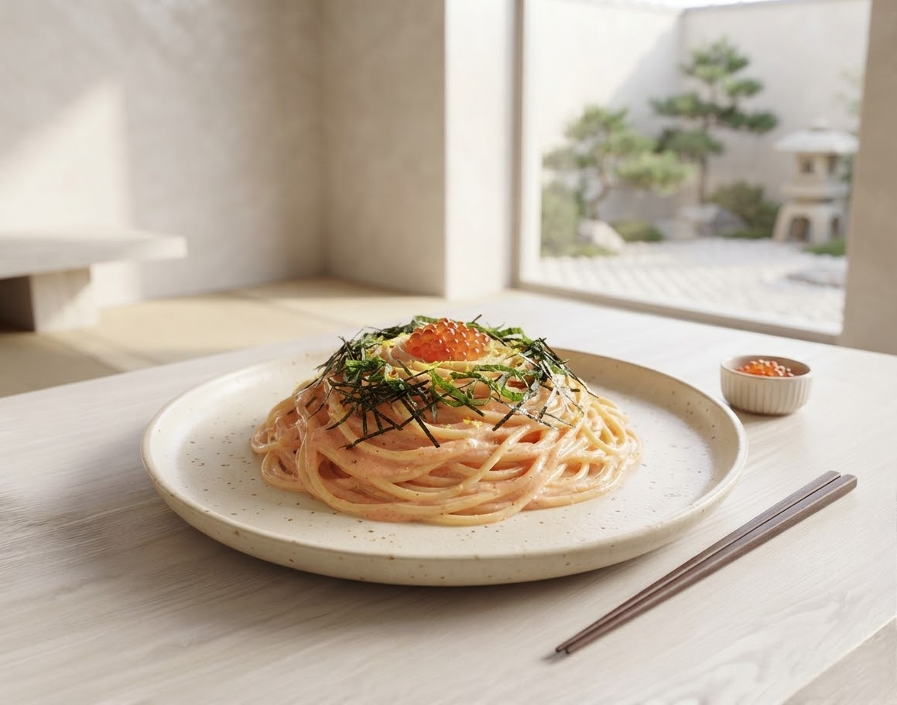
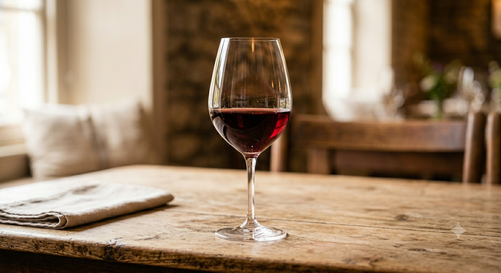
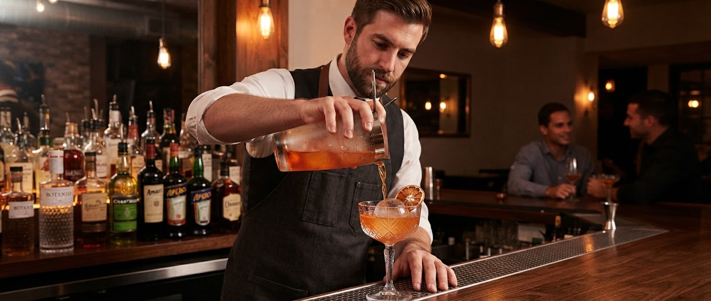

大切な人と、心に灯をともす時間を。
岩手の契約農家から届く、力強い旬の食材。
五感を揺さぶるアヒージョの香りと、
1000本のワインが織りなす極上のイタリアン。
Candles in Store
揺らめくロウソクの数
Wine Variations
厳選されたワイン本数
Local Ingredients
岩手契約農家の食材
User Ratings
平均口コミ評価
大事な記念日や、久しぶりの女子会。
せっかくなら「センスがいいね」と
喜ばれるお店を選びたい。
スケゴロウは、盛岡の喧騒を忘れさせる隠れ家。
カーテンで仕切られたプライベートな空間と、
ボリュームたっぷりの美食が、
あなたの期待を超えてみせます。


New Service Announcement
1,000本以上のワインと多彩なカクテルの中から、あなたのご気分やお好みのお料理に合わせた「最高の1杯」をご提案する新サービスを準備中。
「どれを選べばいいかわからない」「料理に一番合うお酒を楽しみたい」という方も、直感的な質問に答えるだけで、まるで専属ソムリエがいるような極上のマリアージュ体験をお届けします。

「キャンドル風のライトで、オシャレな空間となっていました。席はカーテンで仕切られており、とても落ち着く空間でした。」
盛岡市 A様（30代女性）
「生ハムときのこのリゾットが香り高くて美味しかったです。上質なワインをグラス単位でサーブしてくれるのが有難いですね。」
矢巾町 S様（40代男性）
「女子会で使いましたが、料理のボリュームに驚き！メインの前に満腹になるほど。飲み放題も豊富で最高でした。」
盛岡市 K様（20代女性）